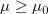
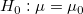

/math-d4af45ea35b4839bf0a40ebb0c7a4407.png "\mu\,\!") が、指定した検定の平均
が、指定した検定の平均 /math-5ab7c597b4d8943eb3551df415047c1e.png "\mu_0\,\!") に等しいかまたは異なるかを検定するのに使用します。検定は 片側または両側のどちらかにすることができ、仮説は次のようになります。
に等しいかまたは異なるかを検定するのに使用します。検定は 片側または両側のどちらかにすることができ、仮説は次のようになります。
1群のt検定は、真の母平均 が、指定した検定の平均 に等しいかまたは異なるかを検定するのに使用します。検定は 片側または両側のどちらかにすることができ、仮説は次のようになります。
/math-e65765bedcabe42c66ec93228769e82a.png "H_0") :
:/math-88ea6cb23d8ae9ba9d5dac8b9805cc5c.png "\mu=\mu_0 ,") vs
vs /math-6207a80403dcccc1aa3b5b7303315c4b.png "H_1") :
:/math-f5d01355034cb1abf5d128b393ddebff.png "\mu \ne \mu_0") , 両側
, 両側
:/math-acb57c5744a84b290a04f02b1545e9f3.png "\mu \le \mu_0") vs :
vs :/math-a26ea3495ca267e259fed0188e7f396e.png "\mu > \mu_0") , 上側
, 上側
: vs :, 下側
/math-888d89edfa615618d98b9d9dc1f12026.png "X(x_1,x_2,...,x_n)\,\!") を入力データセットとすると、統計t 値は自由度が(n-1)のスチューデントt 分布になり、下記のように計算されます。
を入力データセットとすると、統計t 値は自由度が(n-1)のスチューデントt 分布になり、下記のように計算されます。
ここで /math-38ec78183e6af5e1a3f9c7f463fd519b.png "\bar{x}=\frac{1}{n}\sum_{i=1}^n x_i") と
と/math-ab65ebd68263770b61cf182d644bcaae.png "s=\sqrt{\sum_{i=1}^n \frac{(x_i-\bar{x})^2}{n-1}}")
与えられた有意水準 /math-06f7895cd704b1cb0921cf98aec71926.png "\alpha\,\!") において、帰無仮説
において、帰無仮説 /math-806277203dedea2ed8321f6cbd465a54.png "H_0\,\!") は、次の場合に棄却されます。
は、次の場合に棄却されます。
/math-b37bac03b98cbfc5efc0be8f8cb9e6b4.png "|t|>t_{\alpha/2}\,\!") , 両側検定
, 両側検定
/math-ab4bac1fdde96c4f73a79e338654c86f.png "t>t_{\alpha}\,\!") , 上側検定
, 上側検定
, 下側検定
ここで /math-cb6ea21e39ab34cb7538f2232d83de22.png "t_\alpha\,\!") は、 レベルでの自由度 のt分布からの限界値です。仮説の確率を表すより良い方法は、 P 値も出力することです。そして、
は、 レベルでの自由度 のt分布からの限界値です。仮説の確率を表すより良い方法は、 P 値も出力することです。そして、/math-1f3050c84e32960a811642f3ae50c620.png "p < \alpha\,\!") のとき、帰無仮説 を棄却できます。t 統計に対する P 値は、不完全ベータ関数で計算できます。
のとき、帰無仮説 を棄却できます。t 統計に対する P 値は、不完全ベータ関数で計算できます。
/math-ec6611c1fbbb5c6556abf1a4ceadd914.png "p(t>t_{\alpha})=1-I_{\frac{DOF}{DOF+I^2}}(\frac{DOF}{2},\frac{1}{2})")
ここで、/math-3a5bcfb62e8795d2a1865aa0d56210a5.png "I_x(\alpha,\beta)=\frac{I'(\alpha+\beta)}{I'(\alpha)\cdot I'(\beta)} \int_0^x t^{\alpha-1}(1-t)^{\beta-1}\,dt") です。
です。
指定した有意水準で、標本の平均に対する信頼区間は次式になります。
| 帰無仮説 | 信頼区間 |
|---|---|
|  | ![\left[\bar{x}-t_{n-1,\alpha/2}\frac{s}{\sqrt{n}},\bar{x}+t_{n-1,\alpha/2}\frac{s}{\sqrt{n}}\right]](../images/Algorithm_(OneSampletTest)/math-72771118b48ec994926fcd86e53b7bab.png "\left[\bar{x}-t_{n-1,\alpha/2}\frac{s}{\sqrt{n}},\bar{x}+t_{n-1,\alpha/2}\frac{s}{\sqrt{n}}\right]")
|
![\left[-\infty, \bar{x}+t_{n-1,\alpha}\frac{s}{\sqrt{n}}\right]](../images/Algorithm_(OneSampletTest)/math-f30767e8f6276ff0642f817d4931fa8a.png "\left[-\infty, \bar{x}+t_{n-1,\alpha}\frac{s}{\sqrt{n}}\right]")
|
1群の t検定の検出力は、その感度の測定です。帰無仮説および対立仮説に関して、検出力は検定する統計量 T が、実際に帰無仮説を棄却すべき(例：与えられた帰無仮説が真でない)ときに、帰無仮説を棄却するのに十分であるという確率です。3つの異なる帰無仮説のそれぞれに対して、検出力は数学的に以下のように定義されます。
| 帰無仮説 | 検出力 |
|---|---|
/math-0c10119befd073cec6a27f07496f89b1.png "H_0:\mu=\mu_0")
|
/math-3792e357d6b8eb168654fd02eb5c4b3b.png "1-P \left\{T \le t_{1-\alpha/2}(n-1)-t\right\}+P\left\{T<t_{\alpha/2}(n-1)-t \right\}")
|
/math-793ca8ed26d47c70d24a482bb9fed930.png "1-P \left\{T \le t_{1-\alpha}(n-1)-t\right\}")
| |
/math-9f2de4621d15fe747d43bab604aa6a96.png "P \left\{T \le t_{\alpha}(n-1)-t\right\}")
|
ここで T は、t 分布(自由度 )を持つランダムな変数です。仮説の検出力に対する計算は、検定する統計量 t、限界値、自由度が実際のサンプルサイズを使用するのではなく、仮説のサンプルサイズを使って再計算することを以外は、実際の検出力と同じです。